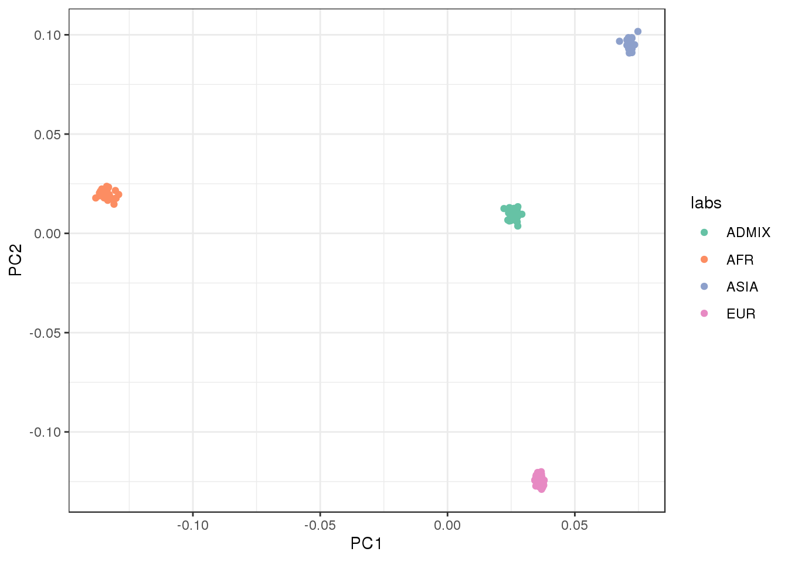
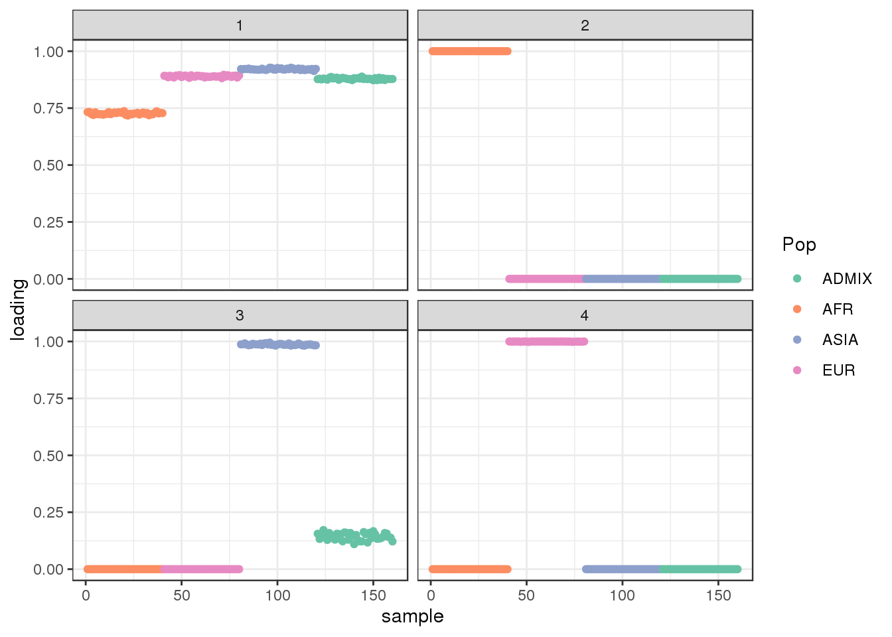

Last updated: 2020-05-14
Checks: 7 0
Knit directory: drift-workflow/analysis/
This reproducible R Markdown analysis was created with workflowr (version 1.6.1). The Checks tab describes the reproducibility checks that were applied when the results were created. The Past versions tab lists the development history.
Great! Since the R Markdown file has been committed to the Git repository, you know the exact version of the code that produced these results.
Great job! The global environment was empty. Objects defined in the global environment can affect the analysis in your R Markdown file in unknown ways. For reproduciblity it’s best to always run the code in an empty environment.
The command set.seed(20190211) was run prior to running the code in the R Markdown file. Setting a seed ensures that any results that rely on randomness, e.g. subsampling or permutations, are reproducible.
Great job! Recording the operating system, R version, and package versions is critical for reproducibility.
Nice! There were no cached chunks for this analysis, so you can be confident that you successfully produced the results during this run.
Great job! Using relative paths to the files within your workflowr project makes it easier to run your code on other machines.
Great! You are using Git for version control. Tracking code development and connecting the code version to the results is critical for reproducibility.
The results in this page were generated with repository version 7ddf69c. See the Past versions tab to see a history of the changes made to the R Markdown and HTML files.
Note that you need to be careful to ensure that all relevant files for the analysis have been committed to Git prior to generating the results (you can use wflow_publish or wflow_git_commit). workflowr only checks the R Markdown file, but you know if there are other scripts or data files that it depends on. Below is the status of the Git repository when the results were generated:
Ignored files:
Ignored: .snakemake/
Ignored: data/datasets/
Ignored: data/raw/
Ignored: data/simulations/
Ignored: nb-log-1324132.err
Ignored: nb-log-1324132.out
Ignored: notebooks/.ipynb_checkpoints/
Ignored: output/
Ignored: sandbox/.ipynb_checkpoints/
Unstaged changes:
Modified: analysis/OutOfAfrica_3G09.Rmd
Modified: code/structure_plot.R
Note that any generated files, e.g. HTML, png, CSS, etc., are not included in this status report because it is ok for generated content to have uncommitted changes.
These are the previous versions of the repository in which changes were made to the R Markdown (analysis/AmericanAdmixture_4B11.Rmd) and HTML (docs/AmericanAdmixture_4B11.html) files. If you’ve configured a remote Git repository (see ?wflow_git_remote), click on the hyperlinks in the table below to view the files as they were in that past version.
| File | Version | Author | Date | Message |
|---|---|---|---|---|
| Rmd | 7ddf69c | Joseph Marcus | 2020-05-14 | wflow_publish(“AmericanAdmixture_4B11.Rmd”) |
| Rmd | afde105 | Joseph Marcus | 2020-05-13 | added American admixture simulation |
| html | 407a5b0 | Joseph Marcus | 2020-05-13 | Build site. |
| Rmd | 90947d3 | Joseph Marcus | 2020-05-13 | wflow_publish(“analysis/AmericanAdmixture_4B11.Rmd”) |
Here I visualize population structure with simulated data from the AmericanAdmixture_4B11 scenario. See Browning et al. 2018 for details.
Import the required libraries and scripts:
suppressMessages({
library(lfa)
library(flashier)
library(drift.alpha)
library(ggplot2)
library(reshape2)
library(tidyverse)
library(RColorBrewer)
library(alstructure)
source("../code/structure_plot.R")
})data_path <- "../output/simulations/AmericanAdmixture_4B11/rep1.txt"
Y <- t(as.matrix(read.table(data_path, sep=" ")))
n <- nrow(Y)
maf <- colSums(Y) / (2*n)
colors <- brewer.pal(8, "Set2")
# filter out too rare and too common SNPs
Y <- Y[,((maf>=.05) & (maf <=.95))]
p <- ncol(Y)
Z <- scale(Y)
print(n)[1] 160print(p)[1] 24643# sub-population labels from stdpop
labs <- rep(c("AFR", "EUR", "ASIA", "ADMIX"), each=40)we end up with 160 individuals and ~24643 SNPs.
Lets run PCA on the centered and scaled genotype matrix:
svd_res <- lfa:::trunc.svd(Z, 5)
L_hat <- svd_res$u
plot_loadings(L_hat, labs) + scale_color_brewer(palette="Set2")
| Version | Author | Date |
|---|---|---|
| 407a5b0 | Joseph Marcus | 2020-05-13 |
Plot the first two factors against each other:
qplot(L_hat[,1], L_hat[,2], color=labs) +
xlab("PC1") +
ylab("PC2") +
scale_color_brewer(palette="Set2") +
theme_bw()
| Version | Author | Date |
|---|---|---|
| 407a5b0 | Joseph Marcus | 2020-05-13 |
the admixed population is in the center of the PC1 vs PC2 bi-plot.
Run ALStructure with \(K=3\):
admix_res <- alstructure::alstructure(t(Y), d_hat=3)
Qhat <- t(admix_res$Q_hat)
plot_loadings(Qhat, labs) + scale_color_brewer(palette="Set2")
| Version | Author | Date |
|---|---|---|
| 407a5b0 | Joseph Marcus | 2020-05-13 |
view structure plot:
create_structure_plot(L=Qhat, labels=labs, colors=colors, ymax=1.01)Scale for 'y' is already present. Adding another scale for 'y', which
will replace the existing scale.the three factors seems to represent “ancestral populations” from ASIA, EUR, and AFR and the admixed population draws ancestry from all three of them as expected.
Run the greedy algorithm:
fl <- flash(Y,
greedy.Kmax=8,
prior.family=c(prior.bimodal(), prior.normal()))Adding factor 1 to flash object...
Adding factor 2 to flash object...
Adding factor 3 to flash object...
Adding factor 4 to flash object...
Adding factor 5 to flash object...
Factor doesn't significantly increase objective and won't be added.
Wrapping up...
Done.
Nullchecking 4 factors...
Done.plot_loadings(fl$flash.fit$EF[[1]], labs) + scale_color_brewer(palette="Set2")
| Version | Author | Date |
|---|---|---|
| 407a5b0 | Joseph Marcus | 2020-05-13 |
view structure plot:
create_structure_plot(L=fl$flash.fit$EF[[1]], labels=labs, colors=colors)there are 4 factors learned by the greedy algorithm: one share factor with a slightly lower loading in the AFR population and 3 sparser factors. The third factor seems to be defined by ASIA individuals and the admixed population has a small weight on this factor.
Run flash [backfit] initializing from the greedy solution:
flbf <- fl %>%
flash.backfit() %>%
flash.nullcheck(remove=TRUE)Backfitting 4 factors (tolerance: 5.88e-02)...
Difference between iterations is within 1.0e+03...
Difference between iterations is within 1.0e+02...
Difference between iterations is within 1.0e+01...
Difference between iterations is within 1.0e+00...
Difference between iterations is within 1.0e-01...
Wrapping up...
Done.
Nullchecking 4 factors...
Done.plot_loadings(flbf$flash.fit$EF[[1]], labs)
| Version | Author | Date |
|---|---|---|
| 407a5b0 | Joseph Marcus | 2020-05-13 |
view structure plot:
create_structure_plot(L=flbf$flash.fit$EF[[1]], labels=labs, colors=colors)the results looks qualitatively similar to the greedy algorithm though now the the third factor is completely defined ASIA individuals.
Run drift initializing from the greedy solution:
init <- init_from_flash(fl)
dr <- drift(init, miniter=2, maxiter=500, tol=0.01, verbose=TRUE) 1 : -3229696.286
2 : -3228212.910
3 : -3227165.987
4 : -3226509.597
5 : -3226125.724
6 : -3225898.835
7 : -3225767.675
8 : -3225688.709
9 : -3225636.374
10 : -3225601.979
11 : -3225577.336
12 : -3225560.772
13 : -3225549.245
14 : -3225540.549
15 : -3225533.633
16 : -3225527.895
17 : -3225522.022
18 : -3225517.249
19 : -3225513.311
20 : -3225510.013
21 : -3225507.188
22 : -3225504.714
23 : -3225502.511
24 : -3225500.495
25 : -3225498.561
26 : -3225496.605
27 : -3225494.601
28 : -3225492.551
29 : -3225490.591
30 : -3225488.818
31 : -3225487.163
32 : -3225485.714
33 : -3225484.471
34 : -3225483.377
35 : -3225482.388
36 : -3225481.452
37 : -3225480.461
38 : -3225479.105
39 : -3225477.126
40 : -3225475.658
41 : -3225474.857
42 : -3225474.300
43 : -3225473.842
44 : -3225473.437
45 : -3225473.071
46 : -3225472.735
47 : -3225472.425
48 : -3225472.139
49 : -3225471.872
50 : -3225471.622
51 : -3225471.389
52 : -3225471.169
53 : -3225470.962
54 : -3225470.767
55 : -3225470.582
56 : -3225470.407
57 : -3225470.241
58 : -3225470.083
59 : -3225469.933
60 : -3225469.789
61 : -3225469.652
62 : -3225469.522
63 : -3225469.397
64 : -3225469.277
65 : -3225469.163
66 : -3225469.053
67 : -3225468.948
68 : -3225468.847
69 : -3225468.750
70 : -3225468.656
71 : -3225468.567
72 : -3225468.480
73 : -3225468.397
74 : -3225468.316
75 : -3225468.239
76 : -3225468.164
77 : -3225468.091
78 : -3225468.021
79 : -3225467.953
80 : -3225467.888
81 : -3225467.824
82 : -3225467.762
83 : -3225467.702
84 : -3225467.644
85 : -3225467.587
86 : -3225467.532
87 : -3225467.478
88 : -3225467.426
89 : -3225467.375
90 : -3225467.325
91 : -3225467.277
92 : -3225467.229
93 : -3225467.183
94 : -3225467.138
95 : -3225467.093
96 : -3225467.050
97 : -3225467.007
98 : -3225466.966
99 : -3225466.925
100 : -3225466.885
101 : -3225466.846
102 : -3225466.807
103 : -3225466.769
104 : -3225466.732
105 : -3225466.696
106 : -3225466.660
107 : -3225466.624
108 : -3225466.590
109 : -3225466.556
110 : -3225466.522
111 : -3225466.489
112 : -3225466.456
113 : -3225466.424
114 : -3225466.392
115 : -3225466.361
116 : -3225466.330
117 : -3225466.300
118 : -3225466.270
119 : -3225466.241
120 : -3225466.211
121 : -3225466.183
122 : -3225466.154
123 : -3225466.126
124 : -3225466.099
125 : -3225466.071
126 : -3225466.044
127 : -3225466.018
128 : -3225465.991
129 : -3225465.965
130 : -3225465.940
131 : -3225465.914
132 : -3225465.889
133 : -3225465.864
134 : -3225465.840
135 : -3225465.816
136 : -3225465.792
137 : -3225465.768
138 : -3225465.744
139 : -3225465.721
140 : -3225465.698
141 : -3225465.675
142 : -3225465.653
143 : -3225465.631
144 : -3225465.609
145 : -3225465.587
146 : -3225465.565
147 : -3225465.544
148 : -3225465.523
149 : -3225465.502
150 : -3225465.481
151 : -3225465.460
152 : -3225465.440
153 : -3225465.420
154 : -3225465.400
155 : -3225465.380
156 : -3225465.361
157 : -3225465.341
158 : -3225465.322
159 : -3225465.303
160 : -3225465.284
161 : -3225465.266
162 : -3225465.247
163 : -3225465.229
164 : -3225465.211
165 : -3225465.193
166 : -3225465.175
167 : -3225465.157
168 : -3225465.140
169 : -3225465.122
170 : -3225465.105
171 : -3225465.088
172 : -3225465.071
173 : -3225465.054
174 : -3225465.038
175 : -3225465.021
176 : -3225465.005
177 : -3225464.989
178 : -3225464.973
179 : -3225464.957
180 : -3225464.941
181 : -3225464.925
182 : -3225464.910
183 : -3225464.894
184 : -3225464.879
185 : -3225464.863
186 : -3225464.846
187 : -3225464.829
188 : -3225464.811
189 : -3225464.792
190 : -3225464.772
191 : -3225464.752
192 : -3225464.730
193 : -3225464.708
194 : -3225464.684
195 : -3225464.660
196 : -3225464.634
197 : -3225464.607
198 : -3225464.578
199 : -3225464.548
200 : -3225464.517
201 : -3225464.483
202 : -3225464.448
203 : -3225464.411
204 : -3225464.372
205 : -3225464.330
206 : -3225464.286
207 : -3225464.239
208 : -3225464.189
209 : -3225464.136
210 : -3225464.080
211 : -3225464.020
212 : -3225463.956
213 : -3225463.887
214 : -3225463.813
215 : -3225463.734
216 : -3225463.649
217 : -3225463.557
218 : -3225463.459
219 : -3225463.352
220 : -3225463.237
221 : -3225463.111
222 : -3225462.975
223 : -3225462.828
224 : -3225462.666
225 : -3225462.490
226 : -3225462.297
227 : -3225462.086
228 : -3225461.853
229 : -3225461.598
230 : -3225461.317
231 : -3225461.007
232 : -3225460.666
233 : -3225460.290
234 : -3225459.876
235 : -3225459.422
236 : -3225458.925
237 : -3225458.385
238 : -3225457.800
239 : -3225457.170
240 : -3225456.498
241 : -3225455.822
242 : -3225455.175
243 : -3225454.557
244 : -3225453.966
245 : -3225453.402
246 : -3225452.863
247 : -3225452.349
248 : -3225451.858
249 : -3225451.390
250 : -3225450.944
251 : -3225450.520
252 : -3225450.115
253 : -3225449.731
254 : -3225449.365
255 : -3225449.018
256 : -3225448.688
257 : -3225448.374
258 : -3225448.076
259 : -3225447.793
260 : -3225447.525
261 : -3225447.270
262 : -3225447.027
263 : -3225446.797
264 : -3225446.577
265 : -3225446.369
266 : -3225446.170
267 : -3225445.981
268 : -3225445.801
269 : -3225445.629
270 : -3225445.465
271 : -3225445.308
272 : -3225445.158
273 : -3225445.015
274 : -3225444.878
275 : -3225444.746
276 : -3225444.620
277 : -3225444.499
278 : -3225444.383
279 : -3225444.272
280 : -3225444.165
281 : -3225444.062
282 : -3225443.962
283 : -3225443.867
284 : -3225443.775
285 : -3225443.686
286 : -3225443.600
287 : -3225443.518
288 : -3225443.438
289 : -3225443.361
290 : -3225443.286
291 : -3225443.214
292 : -3225443.145
293 : -3225443.077
294 : -3225443.012
295 : -3225442.948
296 : -3225442.887
297 : -3225442.827
298 : -3225442.769
299 : -3225442.713
300 : -3225442.659
301 : -3225442.606
302 : -3225442.554
303 : -3225442.504
304 : -3225442.456
305 : -3225442.408
306 : -3225442.362
307 : -3225442.317
308 : -3225442.274
309 : -3225442.231
310 : -3225442.190
311 : -3225442.150
312 : -3225442.110
313 : -3225442.072
314 : -3225442.035
315 : -3225441.998
316 : -3225441.962
317 : -3225441.928
318 : -3225441.894
319 : -3225441.861
320 : -3225441.828
321 : -3225441.796
322 : -3225441.766
323 : -3225441.735
324 : -3225441.706
325 : -3225441.677
326 : -3225441.648
327 : -3225441.621
328 : -3225441.593
329 : -3225441.567
330 : -3225441.541
331 : -3225441.515
332 : -3225441.490
333 : -3225441.466
334 : -3225441.442
335 : -3225441.418
336 : -3225441.395
337 : -3225441.373
338 : -3225441.350
339 : -3225441.329
340 : -3225441.307
341 : -3225441.286
342 : -3225441.266
343 : -3225441.246
344 : -3225441.226
345 : -3225441.206
346 : -3225441.187
347 : -3225441.168
348 : -3225441.150
349 : -3225441.131
350 : -3225441.114
351 : -3225441.096
352 : -3225441.079
353 : -3225441.062
354 : -3225441.045
355 : -3225441.028
356 : -3225441.012
357 : -3225440.996
358 : -3225440.981
359 : -3225440.965
360 : -3225440.950
361 : -3225440.935
362 : -3225440.920
363 : -3225440.906
364 : -3225440.891
365 : -3225440.877
366 : -3225440.863
367 : -3225440.849
368 : -3225440.836
369 : -3225440.823
370 : -3225440.809
371 : -3225440.796
372 : -3225440.784
373 : -3225440.771
374 : -3225440.759
375 : -3225440.746
376 : -3225440.734
377 : -3225440.722
378 : -3225440.710
379 : -3225440.699
380 : -3225440.687
381 : -3225440.676
382 : -3225440.665
383 : -3225440.653
384 : -3225440.642
385 : -3225440.632
386 : -3225440.621
387 : -3225440.610
388 : -3225440.600
389 : -3225440.590
390 : -3225440.579
391 : -3225440.569
392 : -3225440.559 plot_loadings(dr$EL, labs)
| Version | Author | Date |
|---|---|---|
| 407a5b0 | Joseph Marcus | 2020-05-13 |
view structure plot:
create_structure_plot(L=dr$EL, labels=labs, colors=colors)the drift algorithm seems to give a pretty different result from flash. There is one shared factor but then the admixed population has intermediate values on all the other factors. Here are the admixture proportions from the coalescent simulation:
ADMIX percentage 1/6 | Amount African admixture
ADMIX percentage 1/3 | Amount European admixture
ADMIX percentage 1/2 | Amount Asian admixturewhich actually qualitatively lines up with ADMIX population loadings on factors 2-4! It’s kinda interesting that we recapitulate a similar behavior we saw in real data for “known” admixed populations when we applied flash and drift to Human Origins data.
sessionInfo()R version 3.5.1 (2018-07-02)
Platform: x86_64-pc-linux-gnu (64-bit)
Running under: Scientific Linux 7.4 (Nitrogen)
Matrix products: default
BLAS/LAPACK: /software/openblas-0.2.19-el7-x86_64/lib/libopenblas_haswellp-r0.2.19.so
locale:
[1] LC_CTYPE=en_US.UTF-8 LC_NUMERIC=C
[3] LC_TIME=en_US.UTF-8 LC_COLLATE=en_US.UTF-8
[5] LC_MONETARY=en_US.UTF-8 LC_MESSAGES=en_US.UTF-8
[7] LC_PAPER=en_US.UTF-8 LC_NAME=C
[9] LC_ADDRESS=C LC_TELEPHONE=C
[11] LC_MEASUREMENT=en_US.UTF-8 LC_IDENTIFICATION=C
attached base packages:
[1] stats graphics grDevices utils datasets methods base
other attached packages:
[1] alstructure_0.1.0 RColorBrewer_1.1-2 forcats_0.5.0
[4] stringr_1.4.0 dplyr_0.8.5 purrr_0.3.4
[7] readr_1.3.1 tidyr_1.0.2 tibble_3.0.1
[10] tidyverse_1.3.0 reshape2_1.4.3 ggplot2_3.3.0
[13] drift.alpha_0.0.9 flashier_0.2.4 lfa_1.9.0
loaded via a namespace (and not attached):
[1] httr_1.4.1 jsonlite_1.6 modelr_0.1.6 assertthat_0.2.1
[5] mixsqp_0.3-17 cellranger_1.1.0 yaml_2.2.0 ebnm_0.1-24
[9] pillar_1.4.3 backports_1.1.6 lattice_0.20-38 glue_1.4.0
[13] digest_0.6.25 promises_1.0.1 rvest_0.3.5 colorspace_1.4-1
[17] htmltools_0.3.6 httpuv_1.4.5 Matrix_1.2-15 plyr_1.8.4
[21] pkgconfig_2.0.3 invgamma_1.1 broom_0.5.6 haven_2.2.0
[25] corpcor_1.6.9 scales_1.1.0 whisker_0.3-2 later_0.7.5
[29] git2r_0.26.1 farver_2.0.3 generics_0.0.2 ellipsis_0.3.0
[33] withr_2.2.0 ashr_2.2-50 cli_2.0.2 magrittr_1.5
[37] crayon_1.3.4 readxl_1.3.1 evaluate_0.14 fs_1.3.1
[41] fansi_0.4.1 nlme_3.1-137 xml2_1.3.2 truncnorm_1.0-8
[45] tools_3.5.1 hms_0.5.3 lifecycle_0.2.0 munsell_0.5.0
[49] reprex_0.3.0 irlba_2.3.3 compiler_3.5.1 rlang_0.4.5
[53] grid_3.5.1 rstudioapi_0.11 labeling_0.3 rmarkdown_1.10
[57] gtable_0.3.0 DBI_1.0.0 R6_2.4.1 lubridate_1.7.4
[61] knitr_1.20 workflowr_1.6.1 rprojroot_1.3-2 stringi_1.4.6
[65] parallel_3.5.1 SQUAREM_2020.2 Rcpp_1.0.4.6 vctrs_0.2.4
[69] dbplyr_1.4.3 tidyselect_1.0.0